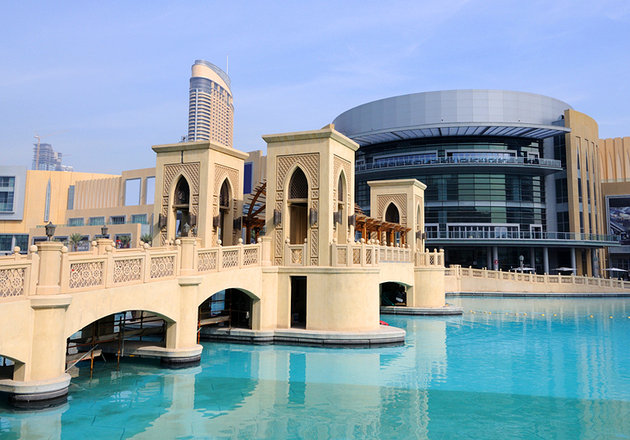
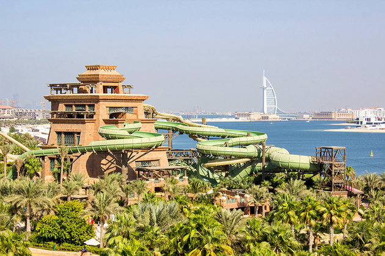
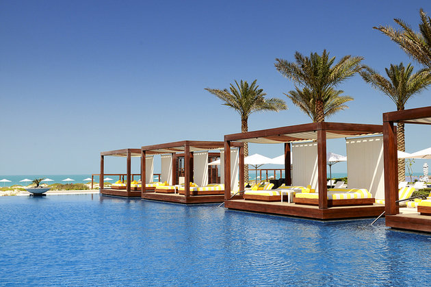
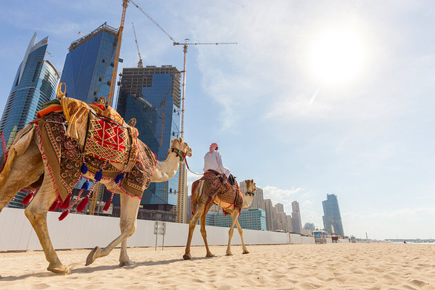
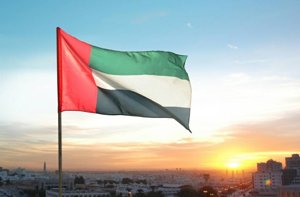

Popular Tourist Attractions
Burj Khalifa
Dubai's landmark building is Burj Kalifa, which at 829.8 metres is the tallest building in the world and the most famous of the city's points of interest.The views across the city skyline from this bird's-eye perspective are simply staggering. Aside from holding the World Record for being the tallest building in the world, Burj Khalifa holds six other World Records: tallest freestanding structure in the world, highest number of stories in the world, highest occupied floor in the world, highest outdoor observation deck in the world, elevator with longest travel distance in the world, and tallest service elevator in the world.

The slick observation deck experience includes a multimedia presentation on both Dubai and the building of the Burj Khalifa (completed in 2010) before a high-speed elevator whizzes you up to the observation deck for those 360-degree views out across the skyscrapers to the desert on one side and the ocean on the other.Back on the ground, wrapping around the Burj Khalifa, are the building's beautifully designed gardens, with winding walkways. There are plenty of water features including the Dubai Fountain, the world's tallest performing fountain, modeled on the famous Fountains of Bellagio in Las Vegas.
Dubai Mall
Dubai Mall is the city's premier mall and provides entry to the Burj Khalifa as well as the Dubai Aquarium. There is also an ice-skating rink, gaming zone and cinema complex if you're looking for more entertainment options. The shopping and eating is endless and there are nearly always special events such as live music and fashion shows within the mall.

Aquaventure Waterpark
This waterpark, based at Atlantis, The Palm on the Palm Jumeirah - Dubai's famous man-made island development - is a great place to cool off after a few days of hectic shopping and sightseeing. The water slide action here is excellent and world-class, with the Aquaconda, the world's longest water slide; a nine-story-tall slide, aptly named the Leap of Faith; and water coaster rides.Also for when all your energy has been used up,there is a 700-meter sweep of white-sand beach to chill out on.
Where to stay in Dubai for the best sightseeing
If you want easy access to Dubai's top tourist attractions, the best place to stay is Downtown Dubai. Prime attractions nearby include the landmark Burj Khalifa, the world's tallest building; Dubai Mall; and the Dubai Fountain. You'll also find plenty of shops, restaurants, and art galleries in this vibrant precinct. If you're seeking some sun, sand, and sea, Jumeirah Beach lies about 15 minutes by car from Burj Khalifa and is also a popular base for tourists.
Tips and Tours: How to Make the Most of Your Visit to Dubai
See the Sights: One of the easiest and most convenient ways to see the city is on a Dubai City Half Day Sightseeing Tour. This guided tour takes you by coach to the main attractions, including Jumeirah Mosque, Bastakiya (the old quarter), the Spice Souq, Deira Gold Souq, and more.Try the two-day Super Saver: City Sightseeing Tour and Desert Safari. Spend the first afternoon seeing the sights of Dubai and the second afternoon and evening on a desert safari, including a camel ride, sandboarding lessons, a sunset barbecue, and a belly dancing show.
 